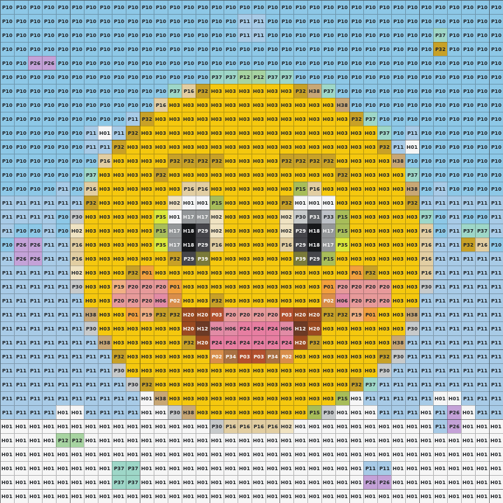
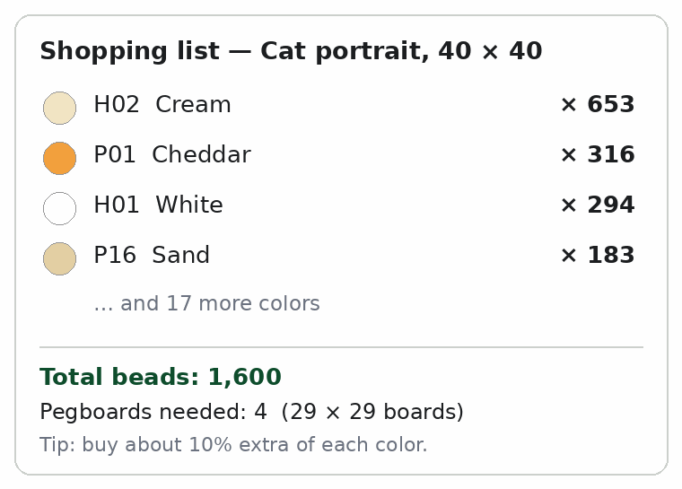

你的照片，变成一张真能拼出来的拼豆图纸
拖动滑块对比看看。这张图纸是本工具真实生成的，不是效果图 — 40 × 40 颗豆 · 21 种颜色 · 1600 颗豆，还附精确的采购清单。

 原图
图纸
原图
图纸
- ✓ 无需注册
- ✓ 100% 在浏览器里运行 — 照片从不上传
- ✓ 免费开始
1 选一张照片
把图片拖到这里，或点这里选择
支持 PNG、JPG、WebP。简单、高对比度的图片效果最好。
示例 — 本工具的真实出图
下面每张图纸都是本生成器由旁边的图片真实生成的。 所见即所得：同样的颜色、同样的编号、同样的颗数。
原图
图纸💡 宠物肖像和人脸：请用 40 颗豆宽或更宽 — 眼睛、胡须和毛发阴影需要更多细节才留得住。
 原图
原图 图纸
图纸💡 风景细节多。大形状 — 天空、山、水面 — 在 40 宽时依然清楚；想要照片级风景，就用更宽的尺寸（Pro 或 Studio）。
 原图
原图 图纸
图纸💡 一个醒目的主体加纯色背景是最容易成功 — 尺寸小一点也依然清晰。

图纸💡 Logo、图标和卡通图在几乎任何尺寸下都转得干净 — 平涂色块和粗轮廓天生适合拼豆。
尺寸指南 — 宽度到底意味着什么
你设的宽度就是横向的豆子颗数。标准中号豆每颗 5 mm， 所以开工前就能算出成品有多大：
| 你设的宽度 | 成品尺寸* | 约需豆子† | 细节程度 | 适合做 |
|---|---|---|---|---|
| 20 颗豆 | ≈ 10 cm (4″) | ≈ 400 | 粗犷 — 只适合大形状 | 钥匙扣、挂件、冰箱贴 |
| 29 颗豆 | ≈ 14.5 cm (5.7″) | 841 | 简单图案很清晰 | 正好一块标准拼豆板 — 杯垫、桌面摆件 |
| 48 颗豆 | ≈ 24 cm (9.4″) | ≈ 2,300 | 不错 — 能做肖像 | 小型墙饰、装裱礼物 （免费版上限） |
| 100 颗豆 | ≈ 50 cm (20″) | ≈ 10,000 | 接近照片的细节 | 大型墙面装饰 （Pro） |
| 200 颗豆 | ≈ 100 cm (39″) | ≈ 40,000 | 最高细节 | 海报级大作品 （Studio） |
* 指横向宽度；高度按你的照片比例自动计算。 † 按正方形、铺满的图纸估算 — 你的精确颗数会出现在每张图纸下方的采购清单里。
💡 经验法则：图纸越小，照片越要醒目 — 一个大主体加强对比。 一张在 100 颗豆宽时很好看的复杂照片，缩到 20 宽就会糊成一团。
分步指南 — 从照片到成品
第一次玩拼豆？跟着这五步走，不会出错。
1 选一张好照片
选一张 主体清晰、背景干净、对比强烈 的图片。 人脸、宠物、Logo 和卡通图效果最好。细节太多太碎的画面缩到豆子大小就会糊在一起 — 照片太杂的话，先紧紧裁到主体周围。

2 设置宽度
宽度就是成品横向有多少颗豆；高度按照片自动计算。豆子越多细节越多， 但豆子、时间和成本也越多。参考：钥匙扣 20–30 颗豆宽；杯垫正好一块板 29； 桌面摆件 40–60；墙面作品 80 以上。成品尺寸见上方尺寸指南。

3 看懂图纸
每个方格就是一颗豆。 每格里印的编号 （比如 P01）就是那颗豆的颜色编号 — 和采购清单里的一致。 每 5 颗豆一条的粗线 让你可以 5 个 5 个地数，不用一颗颗数。 网格线和编号可以在图纸上方开关。

4 照清单买豆子
图纸下方就是采购清单：每种颜色的编号、名称和 精确颗数， 总颗数，以及需要几块标准 29 × 29 拼豆板。每种颜色多买约 10% — 总有几颗豆会滚跑。

5 下载、打印、开拼
把图纸下载为 PNG，看着屏幕拼，或者打印出来拼。 打印时选 100% /「实际大小」 —「适合页面」会把网格缩小， 和拼豆板对不上。Studio 版的 PDF 分页图纸会把大图纸按一块板一页拆开， 每页带行列编号。

🏁 最后一步：熨烫定型
豆子全部摆好后，盖上烘焙纸（熨烫纸），熨斗开中温慢慢打圈熨， 直到豆子顶部熔合在一起。放平冷却 — 上面压一本厚书防止卷边。 整个手艺就这么多：摆、熨、凉、完成。
功能介绍
拼豆图纸生成器把任何图片转成可以直接开拼的拼豆图纸 — 就是你在拼豆板上照着拼的那种图，几秒生成。
- 照片 → 图纸，全自动。 上传图片，每个像素都会匹配到最接近的豆子颜色 — 不用手动一个像素一个像素抠。
- 真实的 64 色豆子色卡。 颜色来自标准 Perler / Hama 色卡，每种带编号和名称（如 H05 红），按感知（Lab）距离匹配，结果看着对，而不只是数字接近。
- 豆子采购清单。 每种颜色都有精确颗数 — 每个编号需要多少颗 — 外加总颗数。
- 拼豆板估算。 工具会告诉你成品需要几块标准 29×29 拼豆板。
- 可下载的图纸。 把成品图纸导出为 PNG，带网格线、每格印颜色编号，照着就能拼。
- 100% 隐私。 全部在浏览器本地运行。你的照片从不上传到服务器。
- 三个版本。 免费版支持最宽 48 颗豆的图纸、基础色卡和带水印导出。Pro 和 Studio 提高宽度上限，解锁完整色卡、CSV 豆子清单、可打印的 PDF 分页图纸和批量模式 — 每版具体包含什么见下方价格区。
使用方法
- 1选一张照片
放入任何 PNG、JPG 或 WebP。简单、高对比度的图片效果最好。 - 2设置宽度
选成品要多少颗豆宽 — 高度自动跟着算。 - 3拿到图纸
看带颜色编号的图纸，核对每种颜色的颗数，下载 PNG。
价格
免费开始。需要更大的图纸、完整色卡， 或者能打印照着拼的文件时，再升级。
Pro
$4.99/month
- 图纸最宽 120 颗豆
- 完整 100 色色卡（Perler + Hama + Artkal）
- 无水印、高清 PNG 导出
- 豆子清单可 下载 CSV — 可打印的采购清单
- 包含免费版全部功能
Studio
$9.99/month
- 图纸最宽 200 颗豆
- PDF 分页图纸 — 按拼豆板分页，带行列坐标，方便打印
- 批量转换 — 一次转换多张照片
- 你创作的图纸带 商用授权
- 包含 Pro 全部功能
密钥只保存在本设备上，输入后立即开通对应版本。
常见问题
我需要多少颗豆子和几块拼豆板？
图纸下方的采购清单会精确数出每种颜色的颗数，外加总颗数和需要几块标准 29 × 29 拼豆板。比如上面的猫咪图纸需要 1600 颗豆、21 种颜色、4 块板。 小提示：每种颜色多买约 10% — 总有几颗豆会滚跑。
我的照片会上传到服务器吗？
不会。全部在浏览器本地运行 — 照片不离开你的设备，什么都不存，也没有账号。 关掉标签页就什么都没了。
免费版、Pro 和 Studio 有什么区别？
免费版：图纸最宽 48 颗豆，基础 64 色色卡，PNG 导出带小水印。 Pro（$4.99/月）：最宽 120，完整 100 色色卡，无水印导出，可下载 CSV 豆子清单。 Studio（$9.99/月）：最宽 200，可打印的 PDF 分页图纸，批量转换，商用授权。 完整对比见上方价格区。
为什么我下载的 PNG 有水印？
免费版导出图底部有一条小的「Made with Bead Pattern Maker」字样， 方便别人找到这个工具。Pro 和 Studio 的导出完全干净。
打印出来的网格和拼豆板对不上，怎么回事？
是打印机把页面缩放了。按 100% /「实际大小」 重新打印， 关掉「适合页面」 — 打印出的一格必须等于一颗豆。或者直接看着屏幕拼， 或用 Studio 的 PDF 分页图纸：一页正好一块板，带行列编号。
手机上能用吗？
能 — 任何现代手机浏览器都能用，还可以像 App 一样安装 （找「添加到主屏幕」）；装好后离线也能用。照片留在你的手机上，和电脑上一样。